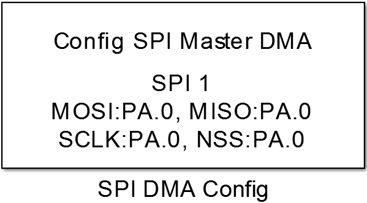
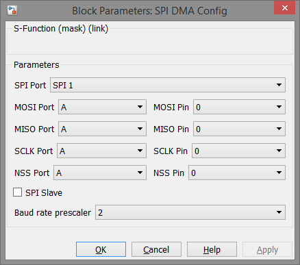

SPI DMA Config
Configuration of hardware SPI peripheral for non-blocking data transfer.
Library
Targets/STM/DISCO_F407VG
Description
{kind=link}
This block configures a hardware SPI peripheral of an STM32 MCU including DMA transfer to enable non-blocking data transmission.
Data Type Support
This block has no input and output ports.
Parameters and Dialog Box
SPI Port
Selects the hardware SPI peripheral of the used STM32 MCU. The port number is related to the actual SPI number referred to the datasheet of the MCU.
Attention
Not all MCUs provide all of the selectable SPI ports.
MOSI Port
GPIO port letter of the Master Out Slave In pin of the SPI peripheral.
MOSI Pin
Pin number of the MOSI pin.
MISO Port
GPIO port letter of the Master In Slave Out pin of the SPI peripheral.
MISO Pin
Pin number of the MISO pin.
SCLK Port
GPIO port letter of the Serial Clock pin of the SPI peripheral.
SCLK Pin
Pin number of the Clock pin.
NSS Port
GPIO port letter of the Slave Select pin of the SPI peripheral.
NSS Pin
Pin number of the Slave Select pin.
Attention
All port and pin numbers have to match the selected SPI peripheral as referred in the data sheet of the used MCU.
SPI Slave
Configures the selected SPI peripheral as slave if checked.
Baud rate prescaler
In master mode the clock frequency of the SCLK pin is the peripheral clock devided by this prescaler value.